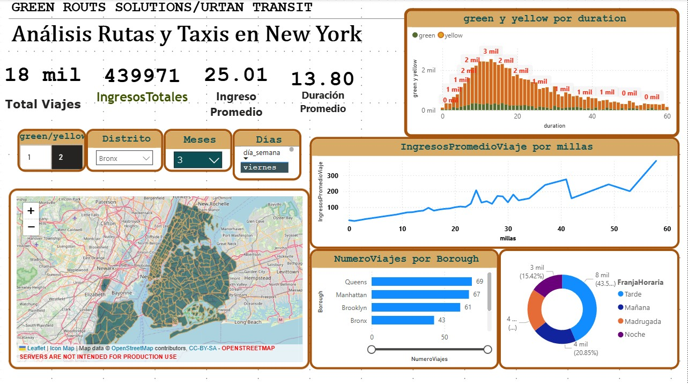
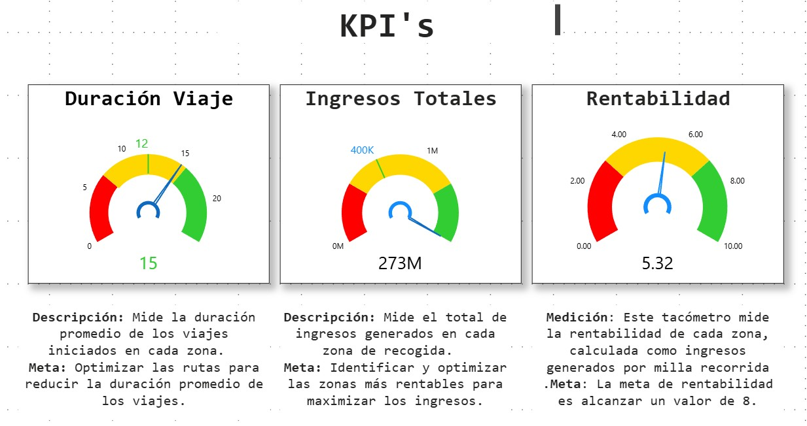
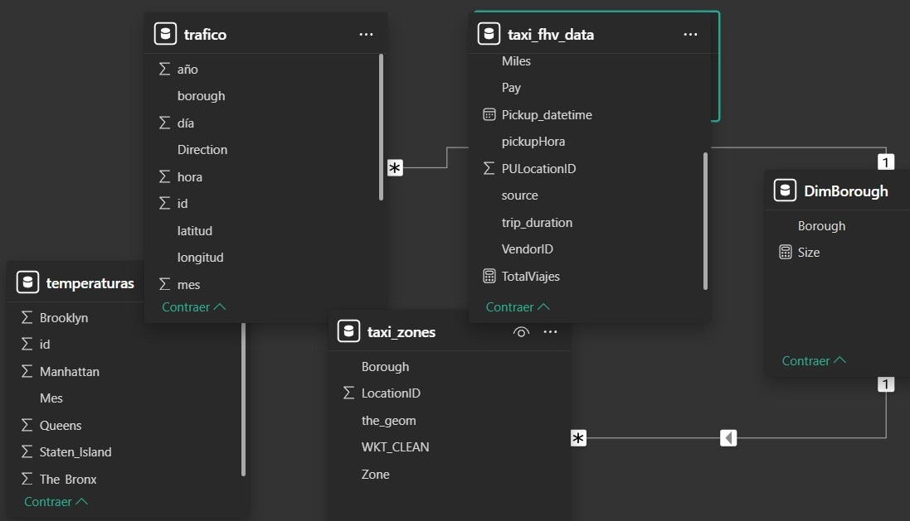
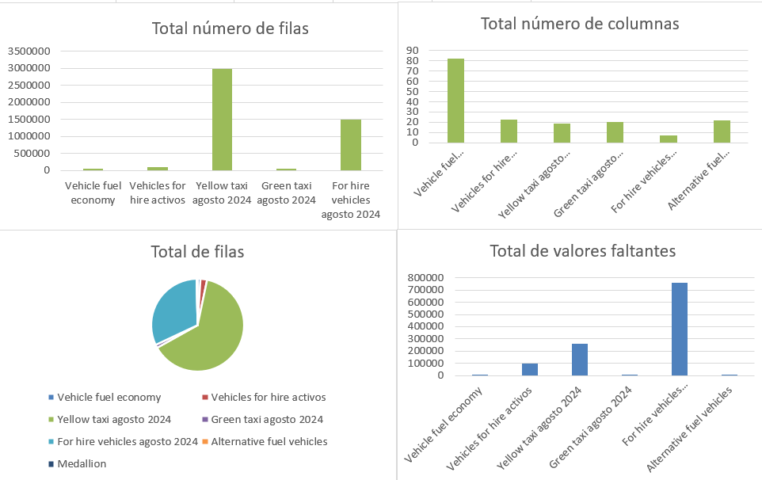
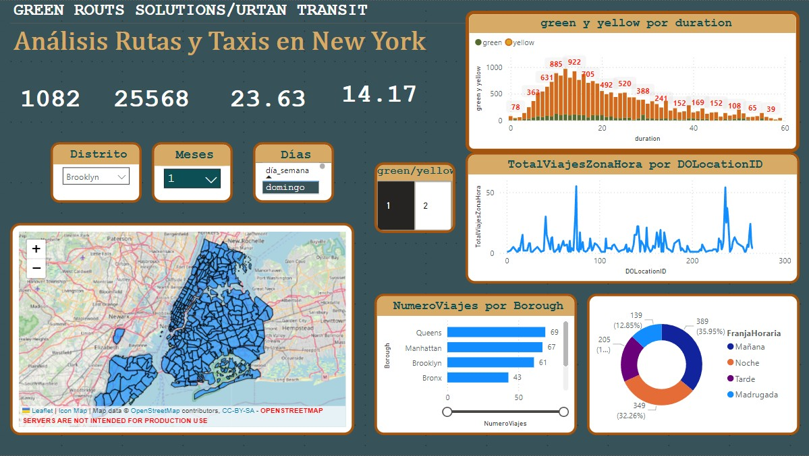
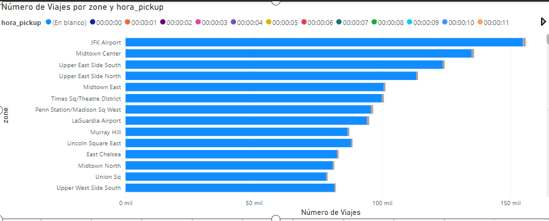

Sustainable Mobility Modeling
Feasibility analysis for transition to eco-friendly vehicle fleets in New York

Overview
This project evaluates the feasibility of replacing New York City's traditional taxi fleet with electric and hybrid vehicles, analyzing the economic, environmental and operational impact of this transition.
Key Metrics
🌱 Emissions Reduction
45%
annually
💰 Fuel Savings
$3.2M
per year
🚕 Vehicles Analyzed
13,500+
taxis
⏱️ Payback Period
3.5 years
on investment
Methodology
1. Data Collection
- NYC taxi trip data (NYC TLC)
- Vehicle technical specifications
- Energy and maintenance costs
- Available charging infrastructure
2. Modeling
- Energy consumption model
- 10-year cost projection
- Carbon footprint per vehicle
- Route and range analysis
3. Simulation
- Usage pattern simulation
- Optimal charging strategies
- Gradual adoption scenarios
- Sensitivity analysis
4. Analysis
- Return on Investment (ROI)
- Environmental impact
- Operational feasibility
- Strategic recommendations
Key Findings
Environmental Benefits
- Reduction of 78,000 tons of CO₂ annually
- 92% decrease in NOx emissions
- Lower noise pollution
- Contribution to sustainability goals
Economic Benefits
- Savings of $8,500 per vehicle/year
- Available tax incentives
- Lower maintenance costs
- Longer vehicle lifespan
Technology Stack
Data Analysis
- Python (Pandas, NumPy)
- GeoPandas
- Scikit-learn
- Jupyter Notebooks
Visualization
- Matplotlib/Seaborn
- Plotly
- Folium
- Power BI
Modeling
- SimPy for simulations
- Optimization with PuLP
- Time series analysis
- Predictive models
Visualizations






Strategic Recommendations
Short Term (1-2 years)
- Implement pilot program with 500 vehicles
- Install strategic charging stations
- Train drivers and mechanics
- Monitor performance and adjust model
Long Term (3-5 years)
- Complete transition to 100% clean vehicles
- Integrate with renewable energy
- Intelligent fleet management system
- Expansion to other cities